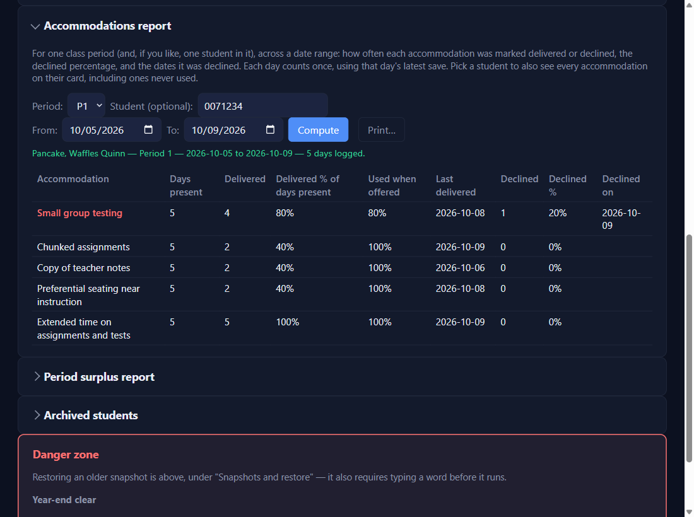

The Accommodations report
Settings → Accommodations report
Pick the Period, optionally one Student in it (leave it on Whole class otherwise), the dates, then Compute.

Read the table
For one student: every accommodation on their list, even ones never used, with Days present, Delivered, Delivered % of days present, Used when offered, Last delivered, and Declined with the dates. Never-used ones and the most-declined come first, so the strongest cases for an ARD are at the top. For the whole class: each accommodation's delivered and declined counts, with who declined it on which date.
Used when offeredNEWfor version 0.4.21 and beyond is delivered out of delivered + declined: only the days you offered it count. An accommodation needed only some days (oral administration on test days, say) can read 40% of days present but 100% used when offered, like Chunked assignments here.
Print it, or save it as a PDFNEWfor version 0.4.21 and beyond
Print… sits beside Compute. It's greyed until Compute shows a result, and greys again if you change a choice (period, student, a date) until you Compute again, so the printout always matches its heading. Click it and the Windows print dialog opens: pick a printer, or Microsoft Print to PDF to save a PDF for an ARD folder. The printout is just the report, headed with its name, your choices, and when it was printed. Nothing is saved.
✓ You'll know it worked
- Rows with declines show in red; never-used ones in yellow.
- Each day counts once, by that day's latest save.
✕ Avoid these
- Marking everything delivered "just in case." The report is only as honest as the chips.
- Forgetting the second click. A declined accommodation is two clicks (✕), not one.
⚠ If you see this
Pick both a start and an end date.Fill in From and To, then Compute.